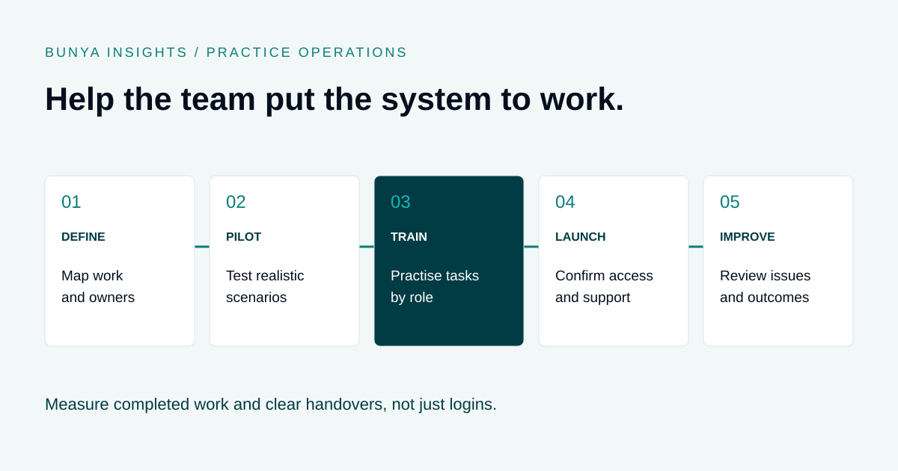

Practice operations
Software Rollout for Financial Advice Firms: A Team Adoption Checklist
Help the team practise the work, understand the handovers and get support when it matters.
THE SHORT ANSWER
A useful software rollout starts with the team’s workflows, tests them through a representative pilot and trains each role on realistic tasks. Agree launch criteria, support responsibilities and which system to use. Measure whether people can complete the work correctly, then use their feedback to improve the process.

Start with the work people need to do
A software rollout changes everyday habits: where a team member finds a client record, how work is assigned and where someone asks for help. Training needs to cover those decisions as well as the screens.
Choose a small set of important workflows, such as preparing a client review, assigning a follow-up and retrieving a document. For each one, name the owner, define the expected outcome and record the handovers between roles.
Make the new working rule explicit. If review tasks belong in the new system, explain when that becomes the agreed process and what happens to existing tasks. Leaving both systems in use without clear boundaries creates uncertainty about which record to trust.
Run a representative pilot
Select a pilot group that includes people who perform the work and people who receive it. Include different levels of confidence with software. A successful demonstration by the project team is not the same as a successful everyday workflow.
- Define the pilot. Agree the users, workflows, permitted data and duration.
- Set acceptance criteria. Describe what participants must be able to complete and which problems would block launch.
- Practise realistic scenarios. Use fictional or otherwise authorised records, including exceptions.
- Capture friction. Record unclear steps, missing permissions, errors and duplicate work.
- Resolve and repeat. Retest changed workflows with the people affected before expanding the rollout.
A pilot should answer whether the process works for the team, not just whether the feature exists.
Train by role and scenario
Bunya provides clients with video tutorials to learn from and apply in their system. Use the relevant tutorial alongside a practical task so team members can watch a step, try it themselves and revisit the video when they need a refresher.
Give each role a short set of tasks to practise. Explain the context, let people complete the scenario, and then check the outcome together. Keep reference material close to the work so staff can find it when they need help.
| Role | Practise | Confirm |
|---|---|---|
| Adviser | Prepare a review and check a draft note. | The source, corrections and next action are clear. |
| Client service team | Assign a task and request missing information. | The owner, due date and client link are correct. |
| Practice manager | Review outstanding work and resolve an exception. | The team knows how to escalate a stalled item. |
| System owner | Handle an access request and report a workflow fault. | The approval route and support responsibilities are understood. |
Watch, apply and check
- Watch the relevant tutorial. Choose the video that matches the task the person needs to complete.
- Apply it in a practice scenario. Use fictional or otherwise authorised information to work through the steps.
- Check the result. Confirm the record, task or handover is correct, and note any questions.
- Revisit when needed. Return to the tutorial while doing the task again, rather than relying on memory alone.
Watching a video is a starting point. Completing the task helps the team identify where someone needs clarification or further support.
Where AI prepares drafts, include a deliberately flawed example. Ask the reviewer to find the error, correct it and explain what should happen before the draft is filed or sent.
Worked example: a review handover
Illustrative example. An adviser completes a review meeting and adds a follow-up task. During the pilot, the client service team cannot tell whether the task is ready to start because the adviser’s note is still awaiting review.
The team defines two separate states: draft follow-up and ready to action. Training is updated to show who changes the state and what must be checked first. A short guide explains the handover, and the next pilot run tests it from both roles.
The improvement comes from clarifying responsibility as well as configuring the software. For the wider process, see the client review workflow checklist.
Use a go-live checklist
- Access: users have the permissions they need, with restricted access checked too.
- Records: required data, documents and open work have passed the agreed validation.
- Workflows: critical scenarios and known exceptions have been tested.
- Training: each role can access the relevant video tutorials, has practised its tasks and knows where to ask questions.
- Ownership: someone is responsible for launch decisions, support and unresolved issues.
- Continuity: the team knows which system to use and how to handle disruption.
- Communication: staff know what changes, when it changes and where to ask for help.
- Follow-up: time is reserved to review issues and support users after launch.
Record any accepted limitations and who approved them. If the move includes transferring records, use the CRM migration checklist alongside this rollout plan.
Keep help available after launch
Nominate a clear support route and a backup contact. Staff should be able to describe a problem without knowing whether it belongs to configuration, data or training.
Keep an issue log with the affected workflow, impact, owner and status. Give urgent problems a defined escalation route. Turn repeated questions into short guidance or an improvement to the process.
Protect time for the people supporting the rollout. Their normal workload does not disappear because they have become the team’s first point of contact.
Measure useful adoption
Login counts can show access, but they do not establish that work is being completed correctly. Review a small set of operational measures against an agreed baseline.
- Can each role complete its critical scenarios without assistance?
- Are tasks assigned to the correct owner with a usable next step?
- How often does work return for missing information or correction?
- Is the team still entering the same information in multiple places?
- Which questions and support issues keep recurring?
- Has the complete workflow become easier or faster, including review time?
Use the findings to improve the process, guidance and configuration. Avoid treating a training gap or unclear handover as an individual performance problem without understanding the cause.
Bring adoption into the Blueprint
For Bunya, identify the people who will use Command Centre, Broadcast HQ and Bunya Voice, then map the workflows each group needs.
Clients receive Bunya video tutorials to support learning and practical application. Build time into the rollout for team members to watch the relevant videos and work through the tasks. Confirm the pilot, any additional training, handover documentation and ongoing support in the agreed scope.
Read how the Bunya build process works and include internal rollout time in your total cost comparison.
Common questions
Should we roll out everything at once?
That depends on dependencies and continuity requirements. A staged rollout can make learning manageable, but the team needs clear rules for work that crosses old and new systems.
Who should be in the pilot?
Include the roles that perform and receive the work, with a mix of experience and software confidence. Test the whole handover rather than one person’s screen.
How much training does the team need?
Base it on the tasks and changes involved. Bunya’s client video tutorials give the team material to learn from and apply. Use practical completion checks to identify where more help is needed, rather than treating a watched video as proof that someone can complete the task.
How do we know the rollout is working?
Check whether staff can complete critical workflows, whether errors and duplicate work are reducing and whether support issues are being resolved. Compare like-for-like work with the baseline.
What if staff keep using the old process?
Find out why. Missing access, unclear rules, incomplete features or unresolved data issues may make the old process necessary. Resolve those barriers and communicate the agreed transition clearly.